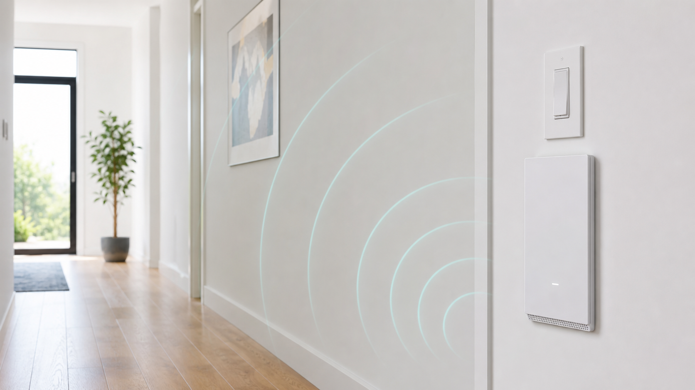
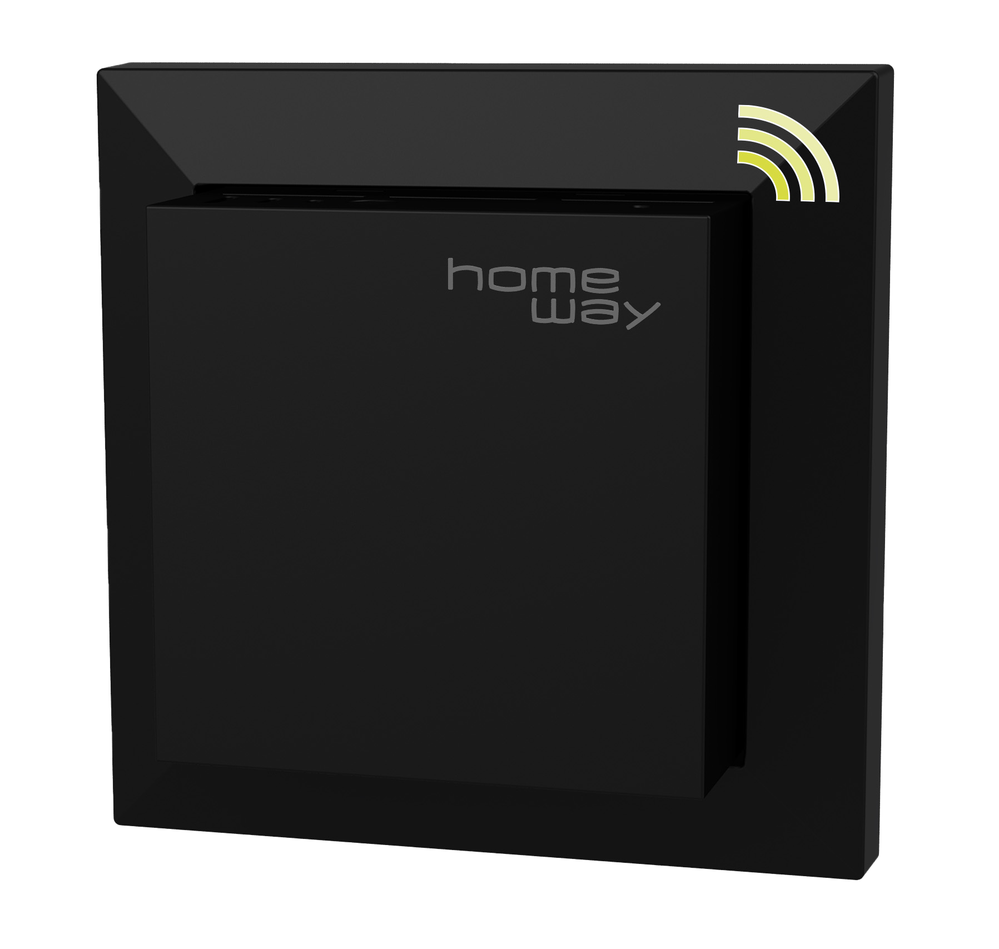

Unauffällig im Wohnbereich
Die richtige Position ist wichtiger als möglichst viele Geräte.
PoE · Decke · Wand · Unterputz
Access Points bringen WLAN dorthin, wo es gebraucht wird. Beratung & Technik plant Standorte, PoE, Switch, WLAN-Konfiguration und Übergabe.
Ein Access Point wird idealerweise per LAN-Kabel versorgt. Dadurch ist das WLAN stabiler und besser planbar als bei Funk-Repeatern.
Für Stockwerke, Homeoffice, Wohnzimmer, Garten oder Garage.
Strom und Daten über ein Netzwerkkabel, wenn Switch und AP dafür geeignet sind.
UniFi, Omada, HomeWay oder AVM je nach Anspruch und Budget.
WLAN-Name, Passwort, Gäste-WLAN und Roaming-Einstellungen.

Die richtige Position ist wichtiger als möglichst viele Geräte.

HomeWay kann je nach Bestand und Designanspruch eine passende Option sein.
Start mit CONNECT WIFI PRO oder im Rahmen einer Heimnetz-Inbetriebnahme.
Projekt besprechen